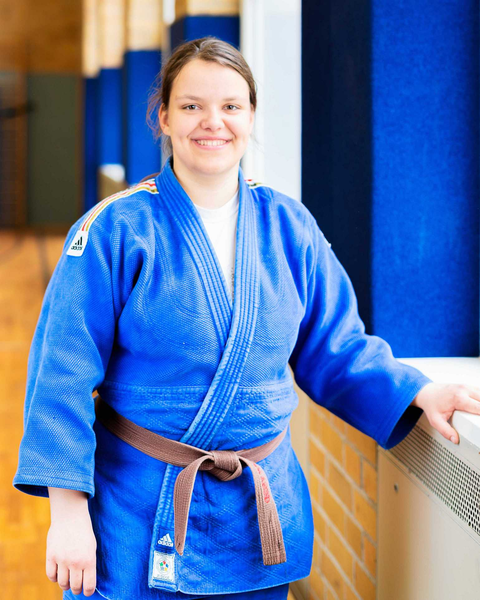
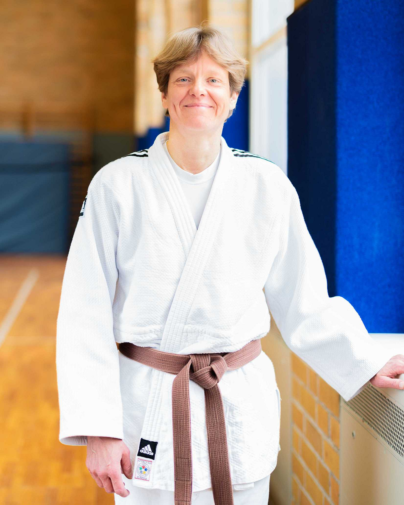
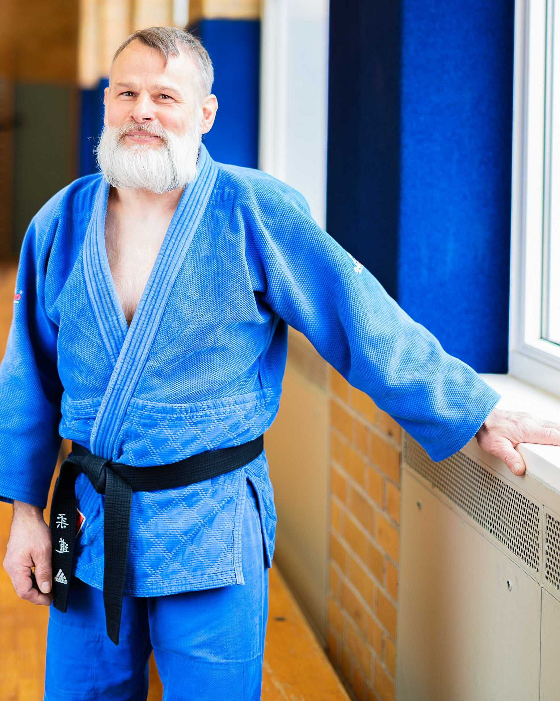
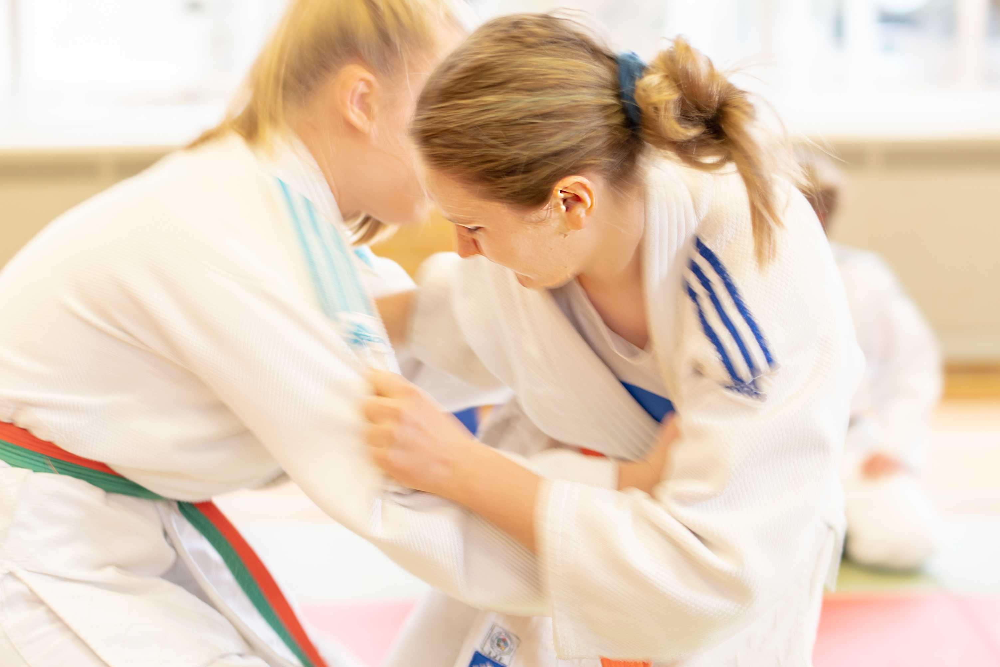

Sporthalle Alt Garge
Hauptstr. 12, 21354 Alt Garge
Ab dem 10.04.2026 starten wir das Training eine halbe Stunde früher.
Kinder (frühe Gruppe): Freitag 17.30 – 19.00 Uhr
Fortgeschrittene und Erwachsene: Freitag 19.00 – 20.30 Uhr
Kontakt Stefanie Herzer 05852 / 1248
Kontakt Jörg Steinhauer 05853 / 978715
Zum Schnuppertraining sind Jugendliche und Erwachsene herzlich willkommen!
Sporthalle Neu Darchau
Elbuferstraße 12, 29490 Neu Darchau
Jugendliche und Erwachsene: Mittwoch 20 – 21.30 Uhr
Mindestalter 16 Jahre, jüngere nach Absprache
Kontakt Kolja Bailly 0178 / 3583602
Zum Schnuppertraining sind Jugendliche und Erwachsene herzlich willkommen!



Ihr könnt jeweils nach den großen Schulferien in den Judo Club Alt Garge e.V. eintreten.
| Beitragsart | Euro pro Jahr |
| Jugendliche | 70 Euro |
| Erwachsene Einzelmitgliedschaft | 100 Euro |
| Familienbeitrag | 150 Euro |
| Mitglied in einem anderen Judoverein | 60 Euro |
| Passives Mitglied | 45 Euro |
| Aufnahmeantrag | |
| Informationsblatt | |
| Einzug der Passgebühr | |
| Einverständniserklärung Fotorechte | |

| 14.03.2026 | Samstag | TUS Barskamp – 1. Hilfe am Kind | |
| 27.03.2026 | Freitag | Trainingsfahrt nach Lübeck | |
| 24.04.2026 | Freitag | Elternabend, Sporthalle Alt Garge | Termin für außerordentliche Mitgliederversammlung steht noch nicht fest |
| 05.06.2026 | Freitag | Prüfung in Alt-Garge, Sporthalle Alt Garge | |
| 26.06.2026 | Freitag | Spieletraining am letzten Training vor den Sommerferien, Sporthalle Alt Garge | |
| November 2026 | Übernachtung mit Sportteam LG, Sporthalle Alt Garge | Genauer Termin steht noch nicht fest | |
| 18.12.2026 | Freitag | Letztes Training vor Weihnachten, Sporthalle Alt Garge | |
| Ende 2026 | Vorbereitung des 60-jährigen Jubiläums | ||